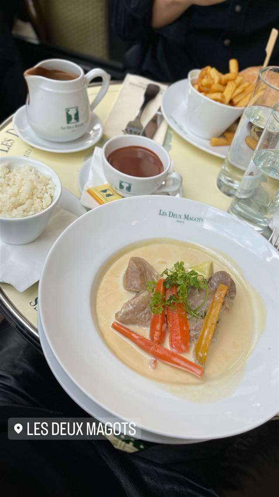

Les Deux Magots
ゴンクール賞への不満から即興で生まれた文学賞の会場
LES DEUX MAGOTS
1885年創業、サン＝ジェルマン＝デ＝プレを象徴する老舗カフェ。店名は元は絹下着店の看板だった2体の中国人形に由来し、ヴェルレーヌやヘミングウェイ、サルトルら文人・芸術家に愛され、1933年には独自の文学賞「プリ・デ・ドゥ・マゴ」も生まれた。
TRIVIA
豆知識
- 店名の由来は1873〜85年にあった絹下着店の看板を飾っていた2体の中国人形（マゴ）
- 1933年、ゴンクール賞への不満からその場に居合わせた文人達が独自の文学賞「プリ・デ・ドゥ・マゴ」を即興で創設した
- ヘミングウェイ、ピカソ、サルトル、ボーヴォワールら文人・芸術家が通った
REVIEWS
世間の評判
4.2Googleマップ
老舗の雰囲気と割高な価格への賛否
- 名物のクロックマダムやホットチョコレートの味を評価する声が多い
- サルトルらが通った歴史とパリらしい雰囲気の良さを評価する声が多い
- 観光地価格で量も少なめだと感じる人が多く、コスパへの不満の声もある
- 待ち時間が長かったりスタッフの対応にばらつきがあるという指摘もある
Tripadvisor 口コミ10544件
| 創業 | 1885年創業 |
|---|---|
| 系譜 | 1873〜1885年に同じ場所にあった絹下着店の店先を飾っていた2体の中国人形（マゴ）から店名を取った。1914年、現オーナーの曽祖父オーギュスト・ブーレがこの店を買い取り文学カフェとして営業を始めた。 |
| 看板 | ブランケット・ド・ヴォー、ホットチョコレートなど |
| 掲載・評価 | 1933年創設の文学賞「プリ・デ・ドゥ・マゴ」の主催会場。 |
| どこから | 海外 |
| 予算 | 昼 €26～€51 夜 €50～€60 |
| 場所 | Saint-Germain-des-Prés駅 6 place Saint-Germain-des-Prés, 75006 Paris, France |
| メモ | サン＝ジェルマン＝デ＝プレ広場に面する老舗カフェ。 |
食べたもの：ブランケット・ド・ヴォー
OFFICIAL
店からの知らせ
NEARBY
近い店・同じ系統の店
-
 カフェ 中目黒
カフェ ファソン 中目黒本店（CAFÉ FAÇON）
コーヒーとの相性を考え抜いたバスクチーズケーキ
昼 ¥1,000～¥1,999 夜 ¥1,000～¥1,999
カフェ 中目黒
カフェ ファソン 中目黒本店（CAFÉ FAÇON）
コーヒーとの相性を考え抜いたバスクチーズケーキ
昼 ¥1,000～¥1,999 夜 ¥1,000～¥1,999
-
 カフェ 二子玉川駅
カフェ リゼッタ 二子玉川店（Cafe Lisette）
食べログ「カフェ百名店」に2年連続選ばれたプリンアラモード
昼 ¥1,000～¥1,999 夜 ¥1,000～¥1,999
カフェ 二子玉川駅
カフェ リゼッタ 二子玉川店（Cafe Lisette）
食べログ「カフェ百名店」に2年連続選ばれたプリンアラモード
昼 ¥1,000～¥1,999 夜 ¥1,000～¥1,999
-
 カフェ 恵比寿・代官山
カフェ アクイーユ 恵比寿店
全国パンケーキ人気店ランキングで1位に輝いたパティシエ仕込みの一枚
昼 ¥1,000～¥1,999 夜 ¥2,000～¥2,999
カフェ 恵比寿・代官山
カフェ アクイーユ 恵比寿店
全国パンケーキ人気店ランキングで1位に輝いたパティシエ仕込みの一枚
昼 ¥1,000～¥1,999 夜 ¥2,000～¥2,999
-
 カフェ 大手町駅
ザ パレス ラウンジ(The Palace Lounge)
輪島塗の名工赤木明登の漆器で提供する皇居のお濠を望むアフタヌーンティー
昼 ¥3,000～¥3,999 夜 ¥3,000～¥3,999
カフェ 大手町駅
ザ パレス ラウンジ(The Palace Lounge)
輪島塗の名工赤木明登の漆器で提供する皇居のお濠を望むアフタヌーンティー
昼 ¥3,000～¥3,999 夜 ¥3,000～¥3,999
-
 カフェ 表参道
カフェラントマン 青山店（CAFE LANDTMANN）
ウィーン本店と同じレシピで作る本格ザッハトルテ
昼 ¥1,000～¥1,999 夜 ¥3,000～¥3,999
カフェ 表参道
カフェラントマン 青山店（CAFE LANDTMANN）
ウィーン本店と同じレシピで作る本格ザッハトルテ
昼 ¥1,000～¥1,999 夜 ¥3,000～¥3,999
-
 カフェ 表参道駅
i2 cafe (アイツーカフェ)
フルーツサンド店の姉妹店が出す、オーブン焼きのダッチベイビー
昼 ¥2,000～¥2,999 夜 ¥2,000～¥2,999
カフェ 表参道駅
i2 cafe (アイツーカフェ)
フルーツサンド店の姉妹店が出す、オーブン焼きのダッチベイビー
昼 ¥2,000～¥2,999 夜 ¥2,000～¥2,999